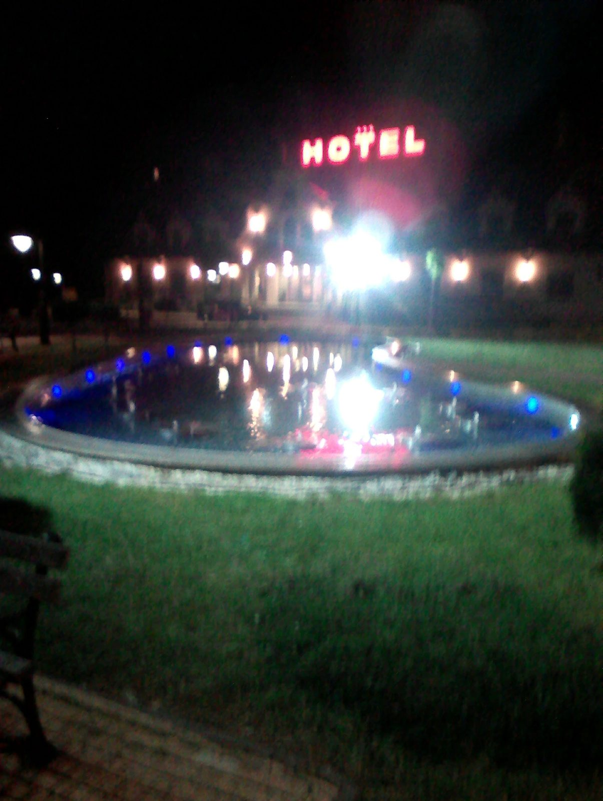
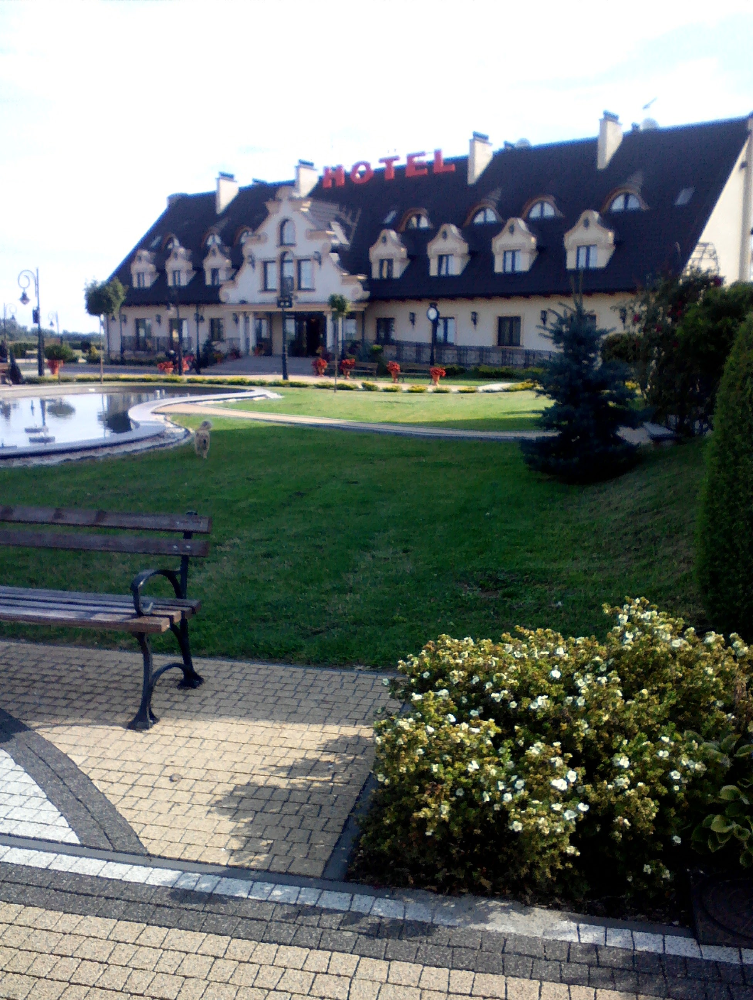
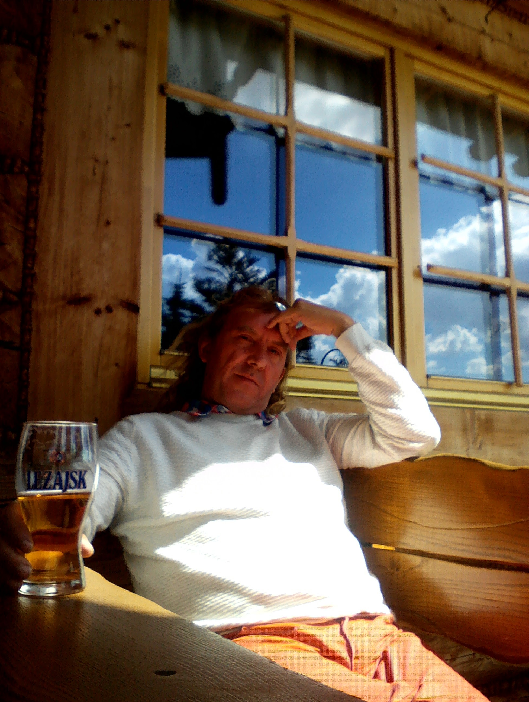
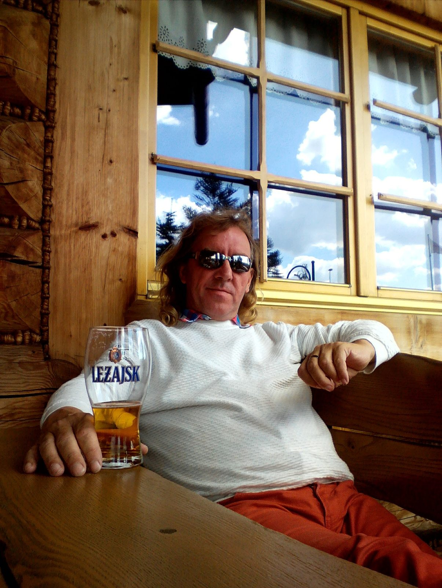

Polsko z cest
Čtyři snímky z přejezdu Polskem v červenci 2017: hotel, zahrada a chvíle odpočinku.
4 fotografie z mého archivuFotografie ↓Poznámky k cestě ↓
📷 Z cesty
Polské zastávky a krajiny. (4 fotky · červenec 2017)




Kliknutím na fotografii ji otevřeš v plné velikosti.
Poznámky k cestě
Polsko bývá průjezdovou zemí — cestou do Pobaltí nebo na sever. Pár zastávek a fotek z trasy v létě 2017.
Tip na prohlídku Varšavy
Reklama · Za rezervaci mohu získat provizi. Nabídku zobrazuje GetYourGuide.
Powered by GetYourGuide